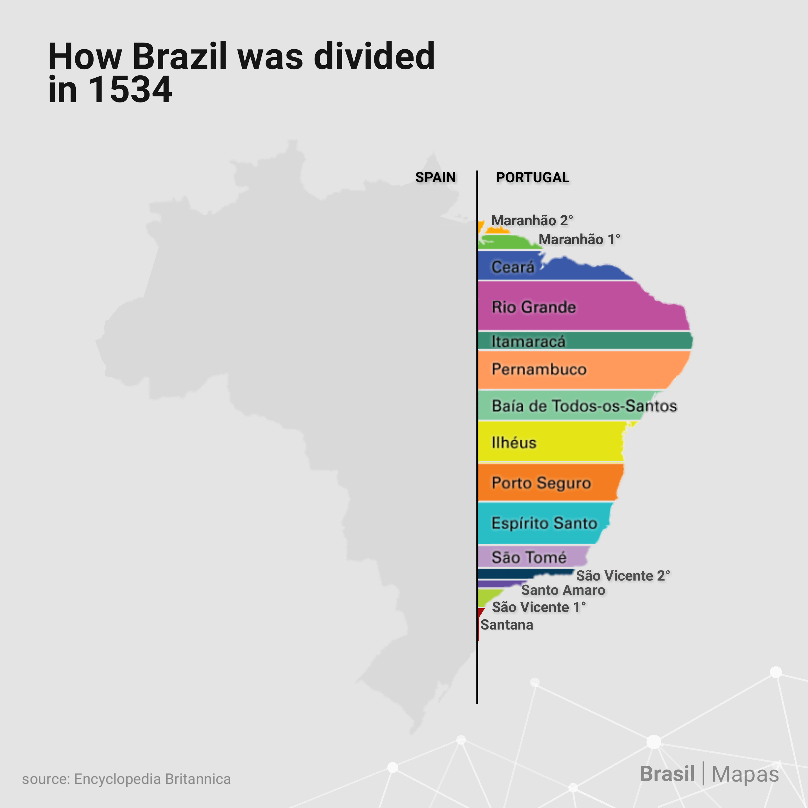
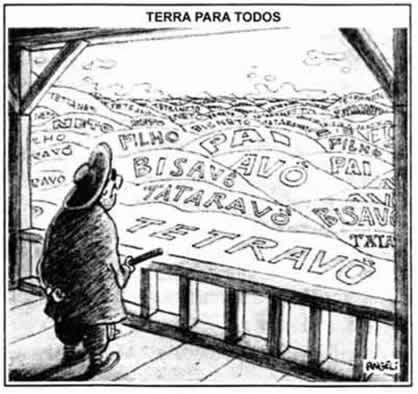
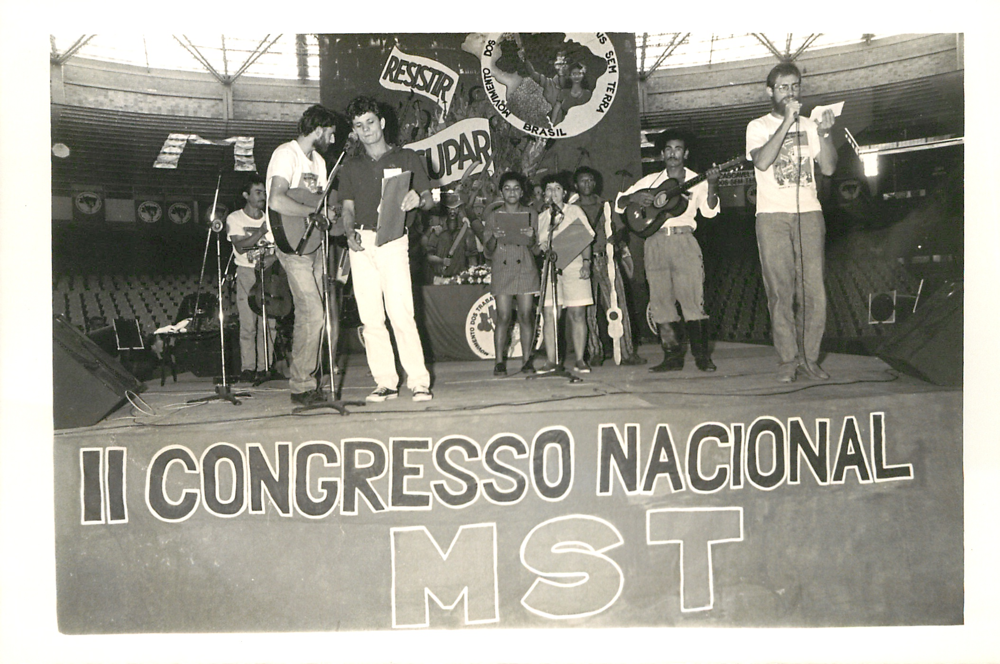
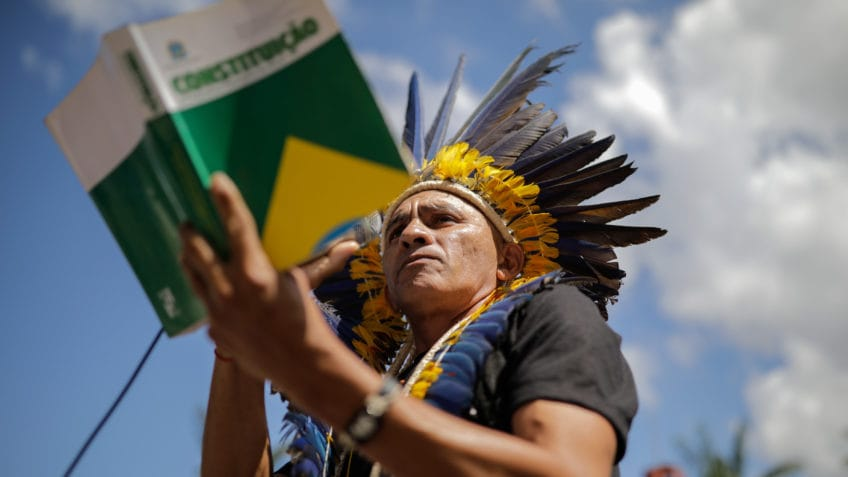
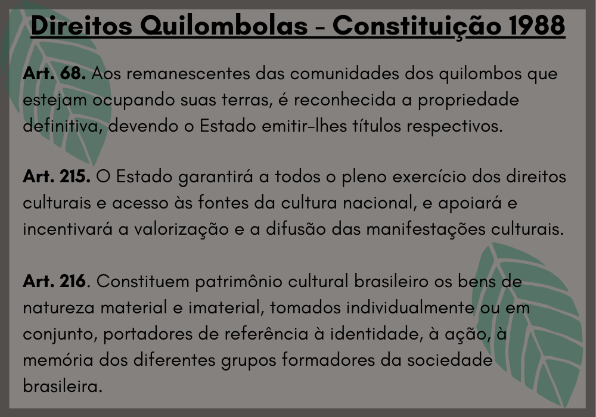
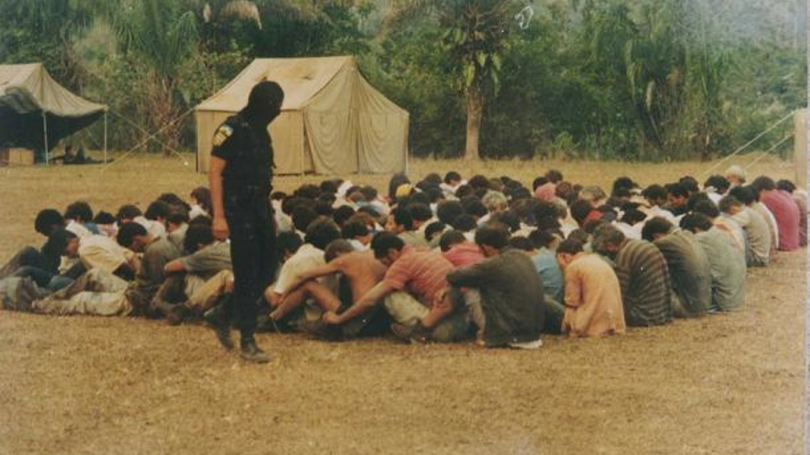
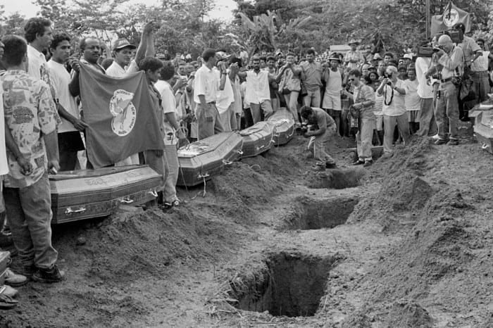
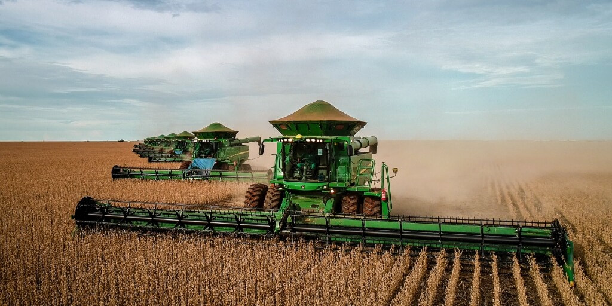

1534 - Capitanias Hereditárias

Em 1534, a Coroa Portuguesa cria o sistema de Capitanias Hereditárias para organizar e ocupar o território do Brasil. O país é dividido em grandes faixas de terra entregues a donatários, que tinham a responsabilidade de administrar, colonizar e defender essas regiões. Na prática, muitas capitanias fracassam por falta de recursos, isolamento e conflitos, marcando o início da concentração de terras no Brasil.
1534 à 1822 - Sesmarias

Sistema em que a Coroa Portuguesa concedia grandes extensões de terra a pessoas influentes, com a obrigação de produção. Esse modelo reforça a concentração fundiária e o controle das terras por uma elite.
1850 - Lei de Terras

A Lei de Terras estabelece que a terra só pode ser adquirida por compra, impedindo o acesso de pobres e ex-escravizados à propriedade rural e consolidando a desigualdade fundiária no país.
1984 - MST (Movimento dos Trabalhadores Rurais Sem Terra)

O MST surge em 1984 como um movimento social formado por trabalhadores rurais sem acesso à terra. Seu objetivo é lutar pela reforma agrária e pela redistribuição de terras improdutivas no Brasil. O movimento organiza ocupações de terras como forma de pressão política, sendo um dos principais atores dos conflitos agrários contemporâneos.
1988 - Constituição Federal (direitos indígenas)

A Constituição Federal de 1988 reconhece os direitos dos povos indígenas às suas terras tradicionais. Isso cria base legal para demarcação de territórios, embora muitos conflitos ainda ocorram por disputas fundiárias.
1988 - Artigo 68 (quilombolas)

A Constituição de 1988 também garante o direito das comunidades quilombolas às suas terras. Mesmo assim, muitas comunidades ainda enfrentam dificuldades para obter a titulação definitiva de seus territórios.
1995 - Massacre de Corumbiara

Conflito agrário em Rondônia envolvendo trabalhadores rurais e forças policiais. O episódio resultou em mortes durante disputa por terra, evidenciando a violência no campo brasileiro.
1996 - Massacre de Eldorado do Carajás

Um dos episódios mais marcantes dos conflitos agrários no Brasil. Trabalhadores rurais ligados ao MST foram mortos pela polícia durante uma manifestação no Pará.
2000–Atualidade - Expansão do Agronegócio

A expansão do agronegócio intensifica o uso de grandes áreas de terra no Brasil. Esse processo aumenta disputas com pequenos agricultores, povos indígenas e comunidades tradicionais.